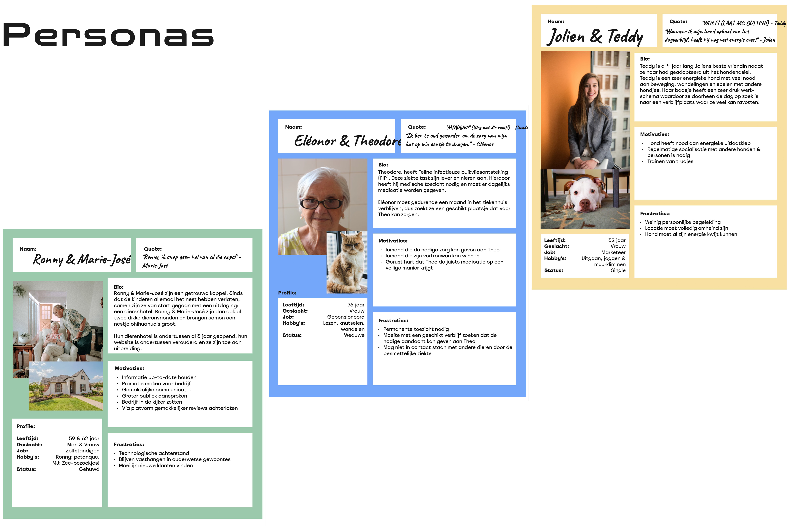
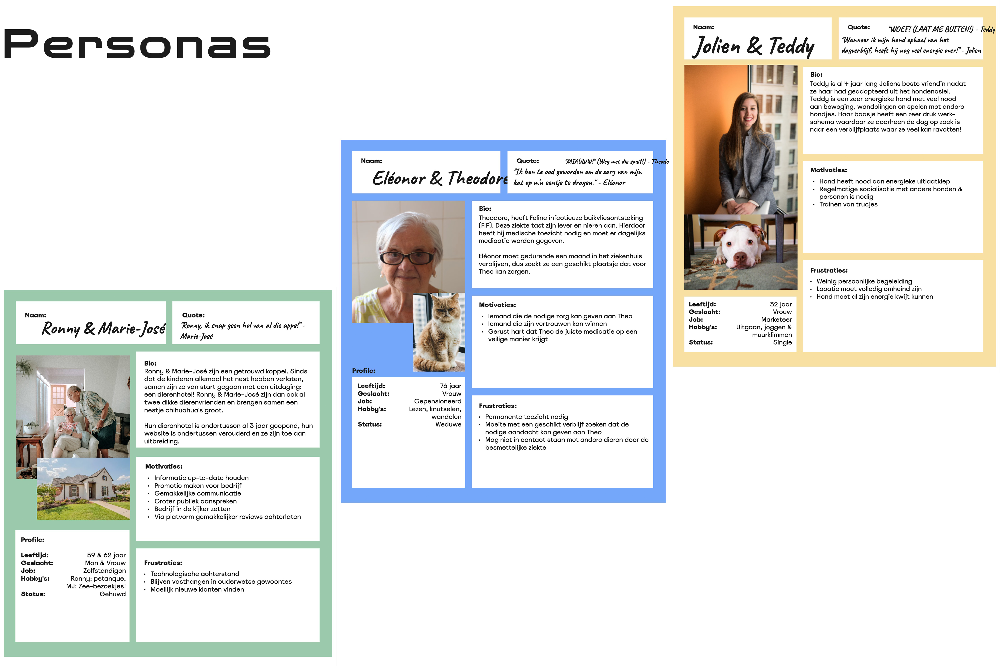

Fetch


Introduction
Fetch is an online booking platform where you can book animal accommodation quickly and efficiently. Think for example of a Booking.com for pets.
Background
Fetch aims to simplify the process for pet owners to find, compare, and book reliable and suitable pet hotels, ensuring their pets are well cared for in their absence. We believe pets are an important part of
the family and therefore deserve the best possible care.
The platform can come in handy for when you leave on holiday and find nowhere to settle your pets.
For this project, we created a benchmarking and bullseye diagram of competitors, determined target audiences and conducted interviews/user testing. We also created some personas and a concept poster. We then started working on the wireframes and designs.
Below you will find some examples and photos of the project.
 


Demo Video Fetch